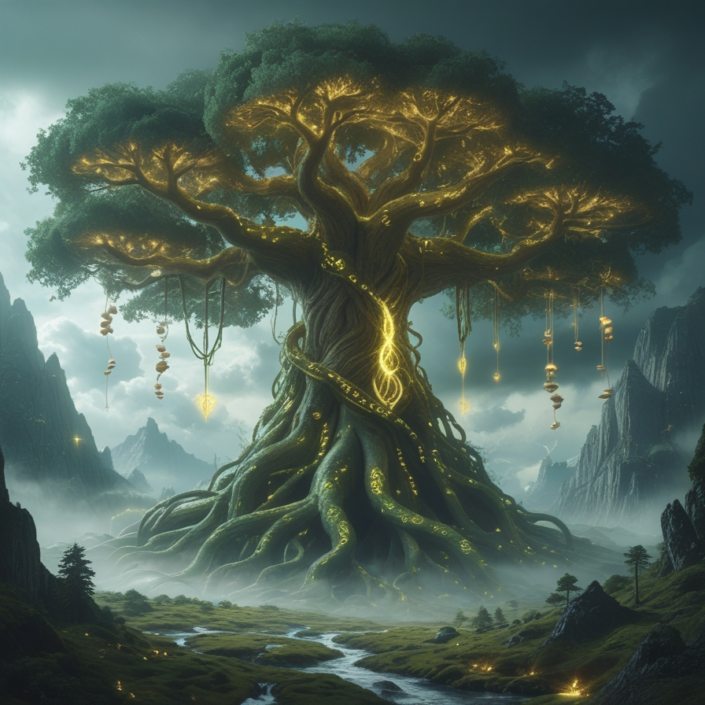

Lore of Eldoria
The Verdant Realm of Forgotten Powers
Eldoria is an ancient land where nature and magic are deeply intertwined.
Long before kingdoms rose and fell, the world was shaped by the Primal Forces—mysterious entities that breathed life into the forests,
carved the mountains,
and whispered through the winds.
The continent is vast and diverse: from the crystalline glaciers of the Frostspine Peaks, to the sun-dappled canopies of the Enchanted Forest,
to the drowned temple of an ancient civilization.
At the heart of Eldoria lies the Worldroot Tree, a colossal, glowing tree whose roots stretch across the entire continent. It is said that the Worldroot is the source of all life, and the balance it maintains is fragile.
The Age of Harmony and Its Fall
For centuries, Eldoria thrived in a state of harmony. It was ruled by a benignant, mighty king.
Druids, mages, and guardians maintained the balance between arcane forces and the living world.
But betrayal and war brought his reign to an end. Grieving and consumed by sorrow,
his beloved — a powerful sorceress — delved into the forbidden arts of necromancy.
When she performed the dark ritual to resurrect her fallen love, something terrible happened.
The resurrection tore through the very fabric of reality —
the Veil Between Worlds that separated life from death was shattered.
Eldoria was no longer protected from the creeping forces of decay and corruption.
From that moment, the Rot began to spread — a spiritual and physical corruption infecting the land, the people, and the beasts.
Necromancy, death magic, and twisted creatures now plague the world.
The catalyst of this catastrophe were the Bloodstones — ancient relics infused with the raw,
forbidden essence of life and death. The sorceress used them to fuel the resurrection, and through them,
the curse of undeath took hold of the Vampire Lord and his Bride.
Now, these Bloodstones are the key:
Without them, the immortality of the Vampire Lord and his Bride cannot be undone.
Modern Eldoria
Now, in a fractured world, heroes arise from every corner of Eldoria:
- Barbarians of the Iron Spine tribe seek vengeance.
- Necromancers of the Hollow Cities delve into death to understand life.
- Paladins protect the last bastions of civilization with holy light.
- Rogues slip between shadows in ruined cities, pursuing truth or coin.
- Wizards in their towers unravel the secrets of the shattered Veil, including Cryomancers in the frozen north.
- Bards from the Tavern for seeking adventure, glory and fame.
- And from the wildest woods, Swarmcallers emerge—mysterious druids who commune with insectkind and nature's raw will, their allegiance known only to the forest itself.
The Worldroot Tree is dying, and with it, Eldoria itself.
You are one of the few who may tip the balance—toward rebirth or ruin.
The Worldroot Tree
